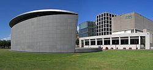
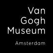

 梵谷博物館（荷蘭語：Van Gogh Museum），位於荷蘭阿姆斯特丹博物館廣場，緊鄰著阿姆斯特丹國家博物館和阿姆斯特丹市立博物館。主要收藏荷蘭著名畫家梵谷及其同時代者的作品。該館藏梵谷作品數量是世界上最多的，第二多則是是荷蘭的克勒勒-米勒博物館。
身世悲慘的梵谷於1890年與世長辭，他的弟弟西奧是巴黎的藝術經紀商，共收藏了梵谷的畫200幅和素描500幅，還有梵谷寫給西奧的信850多封，加上他友人以及當代畫家的精選作品，形成了美術館中出色的收藏。
 梵谷博物館是根據「荷蘭風格派運動」建築師赫里特·里特費爾德的設計而建的，1973年揭幕。1999年加蓋由日本建築師黑川紀章設計的新側翼。
本館主樓地上共四層，底層（0層）設有書店、咖啡館。1層是按照梵谷生平排列的其各時期的作品。2層和3層展示該舘相關的收藏，不定期的梵谷及其他畫家的版畫作品及其他19世紀畫家的作品展覽。地下一層（-1層）通向展覽翼，在地下一層，地上二層的展覽翼中不定期推出特展。
梵谷博物館介紹短片（英文）
梵谷博物館地圖